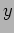
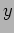

The distribution of humidity is shown in Fig. 5.5.2. A cumulative distribution is shown in Fig. 5.5.2. The distributions show an approxiamately normal profile with a peak around 15% and average of %. A very sharp secondary peak occurs around 95-100% humidity. With the variable trigger levels (1) set to 70% (clear) and 80% (alert) these can both be seen to be well into the tail of the normal distribution just before the spike. This suggests that few false alerts should occur.
|
|
Results (2)show that humidity is greatest contributor to bad weather, consequently it is reasonable to use this alone for any prediction studies.
Based on humidity data, Fig. 5.5.2 shows relative fraction of good weather over various sized time bins. bearing in mind the small period of data available (in climatological sense) there appears to be a tendency for better weather in summer (May-July) with increasingly higher fraction of bad weather in winter in accord with general observations.
|
|
The lengths of periods of continuously good and bad weather based on the humidity triggering rule and stability settings are shown in Fig. 5.5.3. A rapid drop off suggests that long periods of continuous good/bad weather are rare, however outliers make this awkward as source for prediction.
Some examples of individual nights with particular humidity profiles.
|
[Humidity profile 2007-01-29.]
[Humidity profile 2007-02-20.]
[Humidity profile 2007-03-26.]
[Humidity profile 2007-03-28.]
[Humidity profile 2007-04-15.]
[Humidity profile 2007-04-16.]
|
Look at ratio of lengths of consecutive good/bad periods Fig.  TBD TBD.
TBD TBD.
Idea behind these is something like: If we are  hours into a period of good humidity then based on the known distribution of lengths the end of that period is approaching and the probability of this occurring in the next  hours is given by integrating the PDF appropriately from to
hours into a period of good humidity then based on the known distribution of lengths the end of that period is approaching and the probability of this occurring in the next  hours is given by integrating the PDF appropriately from to  . This will on average give the correct probability but for subsequent days we may do just as well using climatological statistics.
. This will on average give the correct probability but for subsequent days we may do just as well using climatological statistics.
XXX Look at periodicity - Lomb periodogram. (not likely)